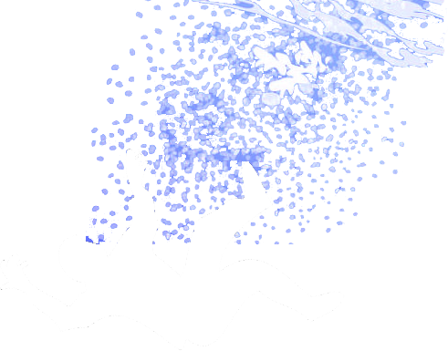
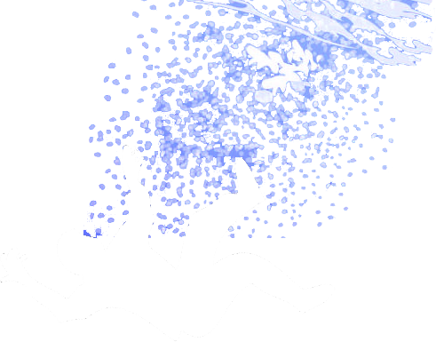

옛날에 바다 속에는 아름다운 인어공주가 살고 있었어요. 인어공주가 사는 마을에서는 요즘 만물상인 검은 문어가 파는 진주파우더가 한창 유행중이였어요. 이제 막 성인이 되어 치장에 관심이 많던 인어공주도 검은 문어의 진주파우더를 사용했어요.
 

그러던 어느 날 우연히 침몰하는 배에 타고 있던 왕자님을 구한 인어공주는 왕자를 보고 그만 한눈에 반해버리고 말았어요. 하지만 왕자와 자신이 다르다는 것을 안 인어공주는 그길로 즉시 만물상인 검은 문어를 찾아가 다리를 만들어주는 약을 구해달라고 때를 썼어요.
검은 문어는 부작용으로 목소리를 영원히 잃을 수도 있다고 말렸지만 결국 인어공주의 고집에 약을 내주고 말았어요. 약을 먹고 정말로 목소리는 잃고 다리를 얻은 인어공주는 곧바로 왕자를 찾아갔어요. 그리고 왕자에게 자신이 침몰하는 배에서 구해준일을 글로 설명했지만 왕자는 난처한 표정을 지었어요. 자신을 구해줬다고 주장한 여인이 또 한사람 있었기 때문이었어요.
왕자는 잠시 두 명의 여인을 바라보며 생각에 잠겼어요. 그때 왕자의 머릿속에 어렴풋이 그날의 기억이 떠올랐어요. 그리고는 곧바로 인어공주가 진짜로 자신을 구해준 사람이라는 것을 알아차렸어요. 어렴풋이 떠오른 그 기억속의 여인은 진주같이 희고 반짝거리는 아름다운 피부를 가지고 있었기 때문이었어요. 그 후로 둘은 오래오래 행복하게 살았답니다.